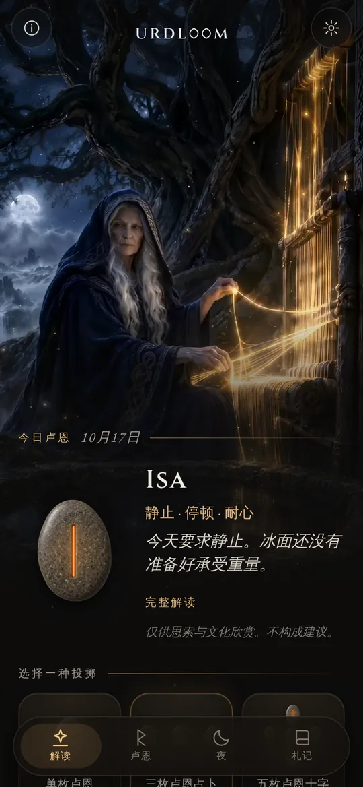
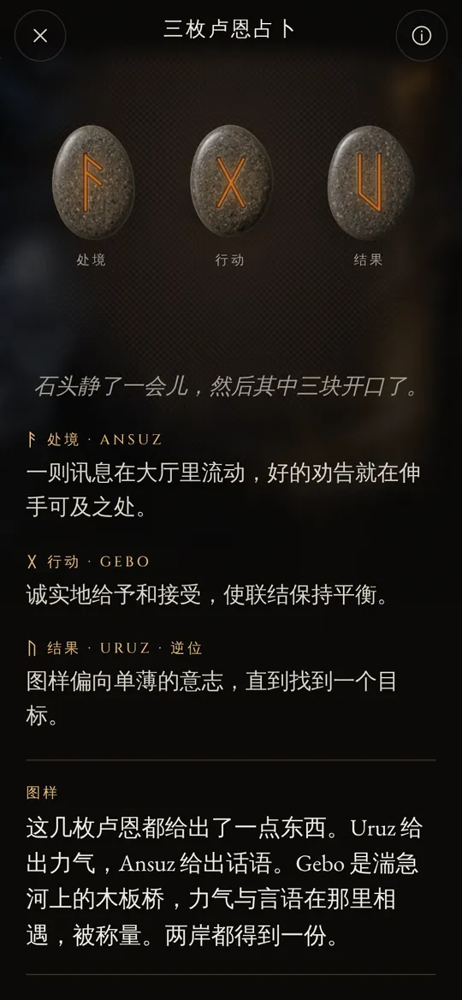
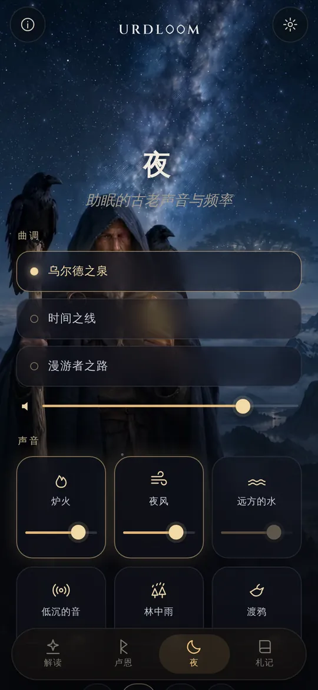
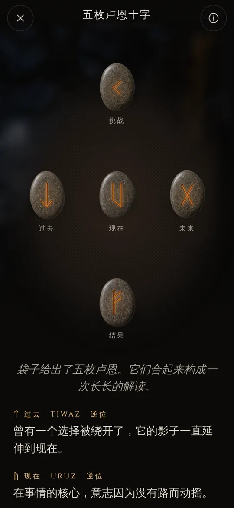

来自命运之泉的卢恩解读。
投下古弗萨克卢恩，用古诗的声音读出落下的卢恩，让夜晚的声音带你入眠。
泉边坐着三位女子
在古老的北欧诗歌里，诺伦们三姐妹坐在世界树尤克特拉希尔下的泉边。她们浇灌它的根，在木签上刻下记号，为每一个出生的人定下一生。最年长的是乌尔德。她的名字意为已经发生之事，这口泉也以她命名。
Urdloom 的名字来自她，也来自传说中编织命运的织机。应用保留了那种气息：手中一只装着石头的布袋，地上铺着一块布，解读用萨迦的声音写成，而不是星座运势的口吻。

从那里走来几位少女，知晓许多事，三位来自树下的湖。《Völuspá》第 20 节
握住，摇动，松手
握住布袋，石头便在你手中作响。松手，它们便飞落到布上，滚动，停稳，再一块接一块翻开。解读出现在它们下方。

单枚卢恩
为眼前这一天取一块石头，或为一个可以用是或否回答的问题。轻触一下，它就被掷出。


三枚卢恩占卜
处境，行动，结果。像一段简短的萨迦那样从左到右读，再合为一体来读：结尾的那条线会显示三者如何彼此对话。

五枚卢恩十字
过去、现在与未来横贯中间，挑战在上，结果在下，而你就在它的中心。




每一段解读都是亲手写成的：二十四枚卢恩、每一种两两组合，以及全部 2,024 种三枚组合，二十二种语言一一写过。你等待时，没有任何内容是临时生成的。

二十四枚卢恩
古弗萨克卢恩是最古老的卢恩字母，大约从二世纪到八世纪被刻写使用。它的二十四个符号分为三组，每组八个，称为 ætt，每组以居首的那枚卢恩所属的神来命名。触碰一块石头即可阅读。
弗雷之组
哈格尔之组
提尔之组
在每一种语言中，卢恩的名字都保留古老的形式。它们是这些符号本身的名字，由学者们根据卢恩诗和最古老的字母表重构而来。
卢恩简史
卢恩首先是文字。日耳曼诸民族在木头、骨头、金属和石头上刻写它们，前后约一千五百年。这些符号和古老的抽签习俗，就这样流传到了我们手中。

白布上的签
罗马史学家塔西佗写道，日耳曼人从果树上截下一根枝条，削成小片，在上面刻下记号，再撒在一块白布上。祭司或一家之主一次拾起一片，共拾三片，然后解读。他没有说那些记号就是卢恩，但这个动作，正是 Urdloom 所保留的。
最早的铭文
在丹麦 Vimose 沼泽出土的一把骨梳上，刻着已知最古老的卢恩铭文之一，只有一个词：harja。同一时期的矛头、胸针和护身符表明，这种文字当时已传遍北方。
一块石头上的整排符号
在哥得兰岛的 Kylver 石上，有人按顺序刻下了全部二十四个符号，这是我们所见最古老的完整弗萨克。这一排字母得名于它的前六个字母：f、u、th、a、r、k。
黄金之角
丹麦 Gallehus 的两只黄金角中，有一只刻着一行押头韵的诗句：“我，Holt 之子 Hlewagastiz，造了这只角。”这是所有日耳曼语言中最早的诗句之一。
维京时代的十六个符号
在斯堪的纳维亚，字母被削减为十六个，称为新弗萨克。成千上万的纪念石用这种字母刻成，其中包括丹麦耶灵的那几块巨石。
诗歌被写下
冰岛的抄写者把埃达诗歌记录成文。在《Völuspá》中，诺伦们坐在乌尔德之泉旁；在《Hávamál》中，奥丁在风中的树上悬挂九夜，随后一声呼喊，拾起了卢恩。
每枚卢恩一节诗
来自挪威和冰岛的卢恩诗，连同一首更古老的盎格鲁-撒克逊卢恩诗，为每枚卢恩配上一小节诗：牛群在亲族间引起纷争，冰雹是最冷的谷粒，冰极其滑。人们对卢恩含义的了解，大多来自这些诗句。
再次阅读
用卢恩来省思，是建立在这些诗歌与埃达意象之上的现代复兴。Urdloom 坦然站在这一传统之中：它不自称古老的神谕，只是用心去读这些古老的符号。

助眠的古老声音与频率
白日结束，漫游者走到星空下。选一段曲调，在上面叠加声音，再设好定时。关掉屏幕后声音仍会继续，并自行渐渐消散。
三段曲调：乌尔德之泉、时间之线和漫游者之路，以喉音唱法、框鼓和弓奏的塔格尔哈帕为基础。
六层声音可供混合，每层都能单独调节音量：炉火、夜风、远方的水、低沉的音、林中雨和渡鸦。
每一种声音都是为 Urdloom 制作的。没有任何声音是从网络播放的。
小而重要的事
- 每天清晨一枚卢恩
- 首页上有一块石头正面朝下等着你。愿意的话，每天早上会有一条简短的消息告诉你为你抽出的是哪一枚卢恩。
- 札记
- 把触动你的解读，连同你当时问的问题，一起保存下来。
- 可以分享的解读
- 把一段解读作为图片发出：石头落下时的样子，以及它们下方的文字。
- 二十二种语言
- 每一种都由读这种语言的人写成并审校，字体和字号都可以调整。
在这里发生的，只留在这里
Urdloom 无需联网即可使用。没有账户，无需注册，没有广告，也不包含任何形式的数据分析或追踪。你的问题、解读和札记都留在你的手机上。
隐私常见问题
Urdloom 能预知未来吗？
不能。解读用于省思和文化兴趣。它们只是指引，就像古老的卢恩那样，意义在你自己的生活中成形。应用中的任何内容都不构成医疗、财务、法律或其他专业建议。
为什么语言听起来很古老？
卢恩来自诗歌、萨迦与谜语的世界。我们特意用这种声音写下解读，并在每一种语言中尽可能贴近卢恩的传统。
需要联网吗？
不需要。从解读到夜晚的声音，一切都在应用之中。
有哪些语言？
英语、土耳其语、德语、法语、西班牙语、意大利语、葡萄牙语、俄语、乌克兰语、波兰语、荷兰语、瑞典语、挪威语、芬兰语、希腊语、阿拉伯语、印地语、印度尼西亚语、日语、韩语、中文和阿尔巴尼亚语。